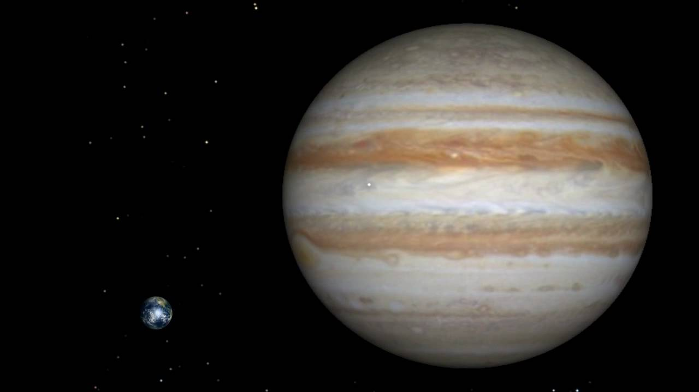
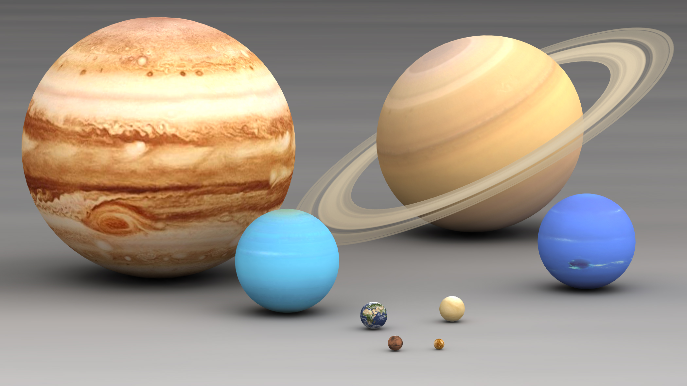
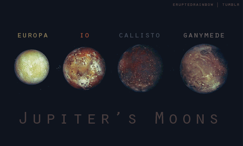
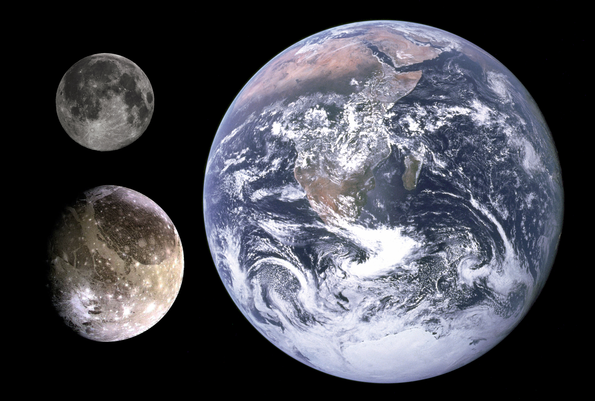

- EXPLORESOLARSYSTEM
-
TOOLS
TEMPERATURE CONVERTER KM TO LIGHT YEAR CONVERTER
- RESEARCH
HUBBLETELESCOPE ISS VOYAGER SPUTNIK- SATELLITES
MOON PROBOS DEMOS TITANUS- PLANETS
 Jupiter is the fifth planet from the Sun and the largest in the Solar System. It is a giant planet with a mass one-thousandth that of the Sun, but two and a half times that of all the other planets in the Solar System combined. Jupiter is a gas giant, along with Saturn, with the other two giant planets, Uranus and Neptune, being ice giants. Jupiter was known to astronomers of ancient times. The Romans named it after their god Jupiter. When viewed from Earth, Jupiter can reach an apparent magnitude of -2.94, bright enough for its reflected light to cast shadows, and making it on average the third-brightest object in the night sky after the Moon and Venus.
Jupiter is the fifth planet from the Sun and the largest in the Solar System. It is a giant planet with a mass one-thousandth that of the Sun, but two and a half times that of all the other planets in the Solar System combined. Jupiter is a gas giant, along with Saturn, with the other two giant planets, Uranus and Neptune, being ice giants. Jupiter was known to astronomers of ancient times. The Romans named it after their god Jupiter. When viewed from Earth, Jupiter can reach an apparent magnitude of -2.94, bright enough for its reflected light to cast shadows, and making it on average the third-brightest object in the night sky after the Moon and Venus.STUNNING STATS Day 9.92496 Hours Year 4,333 Earth days Radius 43,440.7 miles | 69,911 kilometers Planet Type Gas giant Moons 53 confirmed(67 possible) Surface area 61.42 billion km2 Wind speed 618 kmph
WANT TO KNOW YOUR WEIGHT ON JUPITER
Jupiter vs Earth
 How much bigger is Jupiter than Earth? Just to give you a sense of scale, Jupiter is 2.5 times more massive than all the rest of the planets in the Solar System combined. Jupiter's diameter is 11.2 times larger than Earth. In other words, you could put 11.2 Earths side-by-side to match the diameter of Jupiter. And Jupiter's volume is even bigger. It would take 1321.3 Earths to fill up the volume of Jupiter. In terms of surface area, Jupiter is 121.9 times bigger than the Earth. That's how many Earths could be flattened out to cover the surface of Jupiter. Jupiter has 317.8 times the mass of the Earth. Even though Jupiter is an enormous, massive planet, it's much smaller than the Sun. The Sun accounts for 99.86% of the mass of the Solar System. You could fit 109 Earths side by side to match the diameter of the Sun, and it would take 1.3 million planets the size of the Earth to fill it up.
JUPITER VS OTHER PLANETS

JUPITER'S MOONS:
JUPITER HAS 67 MOONS OUT OF WHICH
THE MAJOR ONES ARE
GANYMEDE, CALLISTO, IO AND EUROPA

CLICK ON EACH MOON TO KNOW
MORE
Ganymede
Ganymede (Jupiter III) is the largest moon of Jupiter and in the Solar System, and the only moon known to have a magnetic field. It is the seventh satellite outward from Jupiter and third of the Galilean moons, the first group of objects discovered orbiting another planet. Ganymede orbits Jupiter in roughly seven days and is in a 1:2:4 orbital resonance with the moons Europa and Io, respectively. Ganymede has a diameter of 5,268 km (3,273 mi), 8% larger than the planet Mercury, but its mass is only 45% that of Mercury. Ganymede is 2% larger than Saturn's Titan (second-largest moon of the Solar System). At 2.02 times the mass of the Moon, it is the most massive planetary satellite. It is the ninth-largest object in the Solar System, and the largest without a substantial atmosphere.
Comparison between Ganymede,
Earth and Earth's moon

Callisto
Callisto (Jupiter IV) is the second-largest moon of Jupiter, after Ganymede. It is the third-largest moon in the Solar System and the largest object in the Solar System not to be properly differentiated. Callisto was discovered in 1610 by Galileo Galilei. At 4821 km in diameter, Callisto has about 99% the diameter of the planet Mercury but only about a third of its mass. It is the fourth Galilean moon of Jupiter by distance, with an orbital radius of about 1883000 km. It is not in an orbital resonance like the three other Galilean satellites - - Io, Europa and Ganymede - - and is thus not appreciably tidally heated. Callisto's rotation is tidally locked to its orbit around Jupiter, so that the same hemisphere always faces inward; Jupiter appears to stand nearly still in Callisto's sky. It is less affected by Jupiter's magnetosphere than the other inner satellites because of its more remote orbit, located just outside Jupiter's main radiation belt.
Io
Io is the innermost of the four Galilean moons of the planet Jupiter. It is the fourth-largest moon, has the highest density of all the moons, and has the least amount of relative water of any known object in the Solar System. It was discovered in 1610 and was named after the mythological character Io, a priestess of Hera who became one of Zeus's lovers. With over 400 active volcanoes, Io is the most geologically active object in the Solar System. This extreme geologic activity is the result of tidal heating from friction generated within Io's interior as it is pulled between Jupiter and the other Galilean satellites - - Europa, Ganymede and Callisto - -. Several volcanoes produce plumes of sulfur and sulfur dioxide that climb as high as 500 km (300 mi) above the surface. Io's surface is also dotted with more than 100 mountains that have been uplifted by extensive compression at the base of Io's silicate crust. Some of these peaks are taller than Mount Everest. Unlike most satellites in the outer Solar System, which are mostly composed of water ice, Io is primarily composed of silicate rock surrounding a molten iron or iron-sulfide core. Most of Io's surface is composed of extensive plains coated with sulfur and sulfur-dioxide frost.
Europa
Europa (Jupiter II), is the smallest of the four Galilean moons orbiting Jupiter, and the sixth-closest to the planet. It is also the sixth-largest moon in the Solar System. Europa was discovered in 1610 by Galileo Galilei and was named after Europa, the legendary mother of King Minos of Crete and lover of Zeus (the Greek equivalent of the Roman god Jupiter). Slightly smaller than Earth's Moon, Europa is primarily made of silicate rock and has a water-ice crust and probably an iron - nickel core. It has a tenuous atmosphere composed primarily of oxygen. Its surface is striated by cracks and streaks, whereas craters are relatively rare. In addition to Earth-bound telescope observations, Europa has been examined by a succession of space probe flybys, the first occurring in the early 1970s.
- RESEARCH